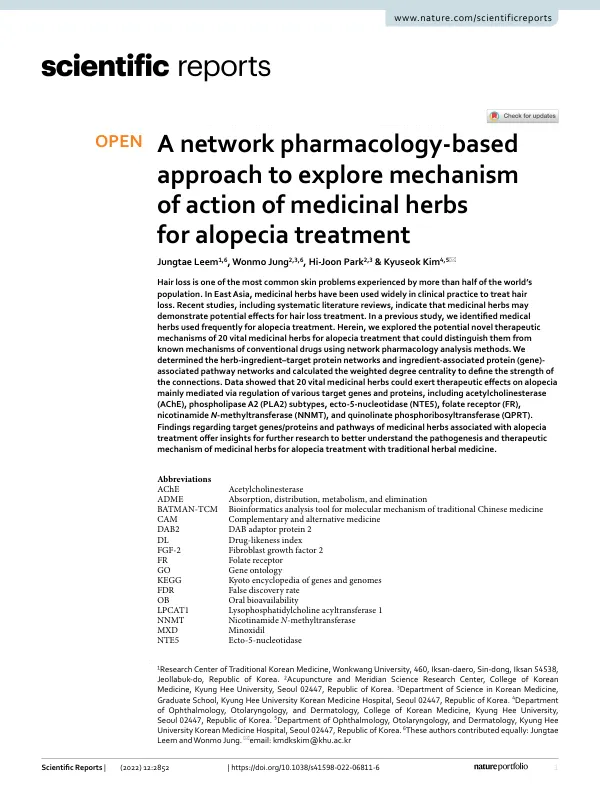

A network pharmacology-based approach to explore mechanism of action of medicinal herbs for alopecia treatment
Leem J, Jung W, Park HJ, Kim K
Scientific Reports 12(1):2852

첫 장 · 오픈액세스First page · open access
논문 소개Summary
앞선 연구에서 탈모 치료에 자주 쓰이는 약재들이 추려졌습니다. 이 연구는 그 가운데 핵심 약재 20종이 어떤 표적과 경로를 거쳐 작용할 수 있는지를 네트워크 약리학으로 탐색한 것입니다. 물음의 초점은 기존 탈모 치료제와 다른 기전이 있는가에 있었습니다.
약재와 성분, 표적 단백질을 잇는 네트워크와 성분 관련 단백질에서 경로로 이어지는 네트워크를 만들고, 연결의 세기를 가중 연결중심성으로 계산했습니다. 그 결과 20종의 약재는 여러 표적 유전자와 단백질의 조절을 통해 탈모에 작용할 수 있는 것으로 나타났습니다. 아세틸콜린에스터레이스와 포스포리파아제 A2 아형들, 엑토5뉴클레오티다아제, 엽산 수용체, 니코틴아마이드 N메틸트랜스퍼레이스, 퀴놀린산 포스포리보실트랜스퍼레이스 등이 지목되었습니다.
이 이름들이 눈길을 끄는 이유는 미녹시딜 같은 기존 약물의 알려진 기전과 겹치지 않기 때문입니다. 한약이 기존 치료제와 다른 길로 작용할 가능성이 있다는 뜻이고, 그것이 이 연구가 던지는 물음입니다.
다만 이것은 가설입니다. 네트워크 약리학은 데이터베이스에 등록된 성분과 표적 정보를 계산으로 이어 붙이는 방법이므로, 흡수와 분포·대사·배설을 거친 실제 인체에서 그 표적에 충분한 농도가 닿는지, 그 경로가 실제로 움직이는지는 확인되지 않았습니다. 여기서 나온 표적과 경로는 앞으로 실험으로 검증해야 할 후보 목록입니다.
저자들도 그렇게 적었습니다. 이 결과가 탈모의 병태생리와 한약의 치료 기전을 더 잘 이해하기 위한 후속 연구에 실마리를 준다는 것입니다. 문헌에서 처방의 빈도를 세고, 그 약재들의 표적을 계산으로 좁히고, 그다음에 실험으로 확인하는 순서에서 이 논문은 두 번째 자리에 있습니다.
An earlier study had identified the herbs most frequently used in treating alopecia. This work explored, through network pharmacology, the targets and pathways through which 20 of those vital herbs might act — with the question focused on whether they work by mechanisms distinct from existing drugs.
Networks were built linking herbs, ingredients and target proteins, and linking ingredient-associated proteins to pathways, with the strength of connections calculated as weighted degree centrality. The 20 herbs emerged as capable of acting on alopecia through the regulation of various target genes and proteins, including acetylcholinesterase, phospholipase A2 subtypes, ecto-5-nucleotidase, the folate receptor, nicotinamide N-methyltransferase and quinolinate phosphoribosyltransferase.
These names draw attention because they do not overlap with the known mechanisms of conventional drugs such as minoxidil. That herbal medicine may act by a different route is the possibility this study raises, and the question it puts.
It remains a hypothesis. Network pharmacology computationally joins compound and target information held in databases; whether sufficient concentration reaches those targets in a real body after absorption, distribution, metabolism and excretion, and whether those pathways actually move, is not confirmed here. The targets and pathways identified are a list of candidates awaiting experimental verification.
The authors say as much: the findings offer a starting point for further research into the pathogenesis of alopecia and the therapeutic mechanisms of medicinal herbs. In a sequence that counts prescription frequency in the literature, narrows the targets of those herbs by computation, and then checks them by experiment, this paper occupies the second position.
인용Cite
Leem J, Jung W, Park HJ, Kim K. A network pharmacology-based approach to explore mechanism of action of medicinal herbs for alopecia treatment. Scientific Reports. 2022;12(1):2852. doi:10.1038/s41598-022-06811-6